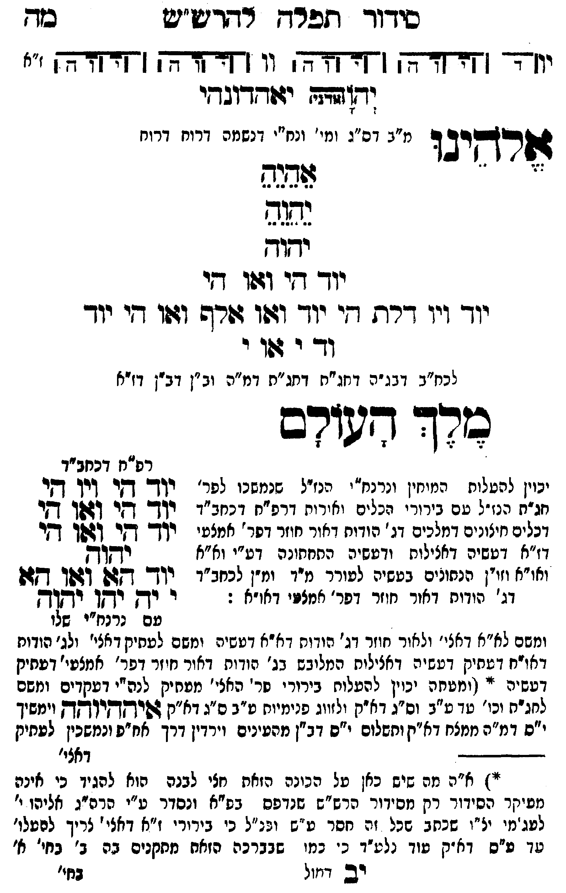

Neue Klartextfassung
[תרשים: ארבעה צירופי יהוה בקווים אופקיים ואנכיים המחברים את האותיות. לצדי התרשים וי וי וי וי; ז"א.] יאהדונהי יהוה (אדני) אלהינו [מ"ב דס"ג ומי' ונח"י דנשמה דרוח דרוח] אֵהֵיֵהֵ יֵהֵוֵהֵ יהוה יוד הי ואו הי יוד ויו דלת הי יוד ואו אלף ואו הי יוד וד י או י [לכח"ב דבג"ה דחג"ת דחג"ת דמ"ה וב"ן דב"ן דז"א] מלך העולם [יכוין להעלות המוחין ונרנח"י הנז"ל שנמשכו לפר' חג"ת הנז"ל עם בירורי הכלים והאורות דרפ"ח דכחב"ד דכלים חיצונים דמלכים דג' הודות דאור חוזר דפר' אמצעי דז"א דעשיה דכללות ורביעיה התחתונה דע"י וא"א ואו"א וזו"ן הנתונים בעשיה לעורר מ"ד ומ"ן לכחב"ד דג' הודות דאור חוזר דפר' אמצעי דאו"א:] [ומשם לא"א דאצי' ולאור חוזר דג' הודות דא"א דעשיה ומשם לעתיק דאצי' ולג' הודות דאו"ח דעתיק דעשיה דכללות המלבש בג' הודות דאור חוזר דפר' אמצעי דעתיק דעשיה. (ומעתה יכוין להעלות בירורי פר' האצי' מעתיק לא"א ובטישים ומשם למקיפי' וכו' עד ע"ב וס"ג דא"ק ולזווג פנימיים ע"ב ס"ג דא"ק איההיוהה וימשיך י"ס דמ"ה ממצח דא"ק ותשלום י"ס דב"ן מהעינים ויורדין דרך אח"פ ונמשכין לעתיק דאצי' וכו') ויכוין לזווג כחב"ד דעתיק דאצי' וכחב"ד דג' הודות דאו"ח דעתיק דעשיה איההיוהה לתקן כלם הבירורים דא"א דעשיה הנז' ולהמשיכן בבחינת מוחין עם עשר הויות וחלפי' בניקוד כ"ס שהם נרנח"י דנשמה דנפש דרוח דנפש ונרנח"י ורנח"י דרוח דנפש דמ"ה וב"ן לכחב"ד דא"א דאצי' ולכחב"ד דג' הודות דאו"ח דא"א דעשיה ולהמשיכן למ"ה וב"ן דאו"א וישסו"ת ויכוין לזווג הכחב"ד דמ"ה וב"ן דאו"א וישסו"ת:[?]] === טבלה === [טור ימין] [טור אמצעי] [טור שמאל] יוד הי ויו הי יוד הי ואו הי יוד הי ואו הי יהוה יוד הא ואו הא י יה יהו יהוה [עם כתר"ו שלו] === סוף טבלה === איההיוהה — הג"ה בתחתית העמוד — (*) א"ה מה שיש כאן על הכוונה הזאת עלי לבאר הוא להגיד כי אינה מעיקר הסידור רק מסידור הרש"ש שנדפס בפ"ח ונסדר ע"י הרש"ג לתיקו' ולטעמי נלע"ד בכתב ידו שכל זה חסר מ"ש ונלע"ד כי בירורי ז"א דאצי' צריך להמשי' עד ע"ס דא"ק מו' ולענ"ד כי כמו שבברכה הזאת מתקנים בה ב' בחי' א' בחי' ז"א דכללות והשנית בג' פר' הודות חיצון אמצעי ופנימי דאור חוזר דפר' אמצעי דז"א וכו' כן עד"ז ראוי לכוין בכל כוונת ברכות השחר והוא זה כי מלבד הכוונות שצריך לכוין לתקן ע"י א"א ואו"א וישסו"ת וי"ס דאצי' וחו"פ דפר' ז"א וכו' שעולים הבירורין שלהם לכחב"ד דעתיק עוד צריך לכוין בהם כוונת ברכת המצות וברכת השבח ולהעלות הבירורין שלהם לע"ס דא"ק כן נראה ממה שראינו בס' נה"ש ד"י ע"ב וז"ל וזה המטבע הנז' מסודר לעולם בכל ברכות המצות והנהנין והשבח ויתחלף בכל עת וזמן מז' ימי השבוע כוונת פרטיות כח"ס כ"א במקומו בע"ה ע"ס א"כ מ"ש רבינו הרש"ש זלה"ה מלך מנן לא בא לגרוע מכוונות הנז' שלא לכוין לע"ס דא"ק אלא בא להוסיף ולומר כי מלבד כוונת ברכות השחר חוץ מכוונת המצות והשבח שצריך לכוין בהם ולהע' הבירורין שלהם לע"ס דא"ק עוד צריך לכוין לתקן בהם תיקון ע"י א"א ואו"א וישסו"ת וי' ע"ס דאור ישר ואור חוזר דפר' ז"א וכו' ולהעלות הבירורין שלהם לכחב"ד דעתיק ועיין פתח עינים ד"ד ע"ג וידידי הרש"ג נר"ו ס"ל כי מה שצריך לכוין בכוונת ברכות השחר לתקן ע"י א"א ואו"א וישסו"ת וכו' הוא כורח חיוב לצורך התפלה ולא כן כוונת ברכת השבח וכו' הוא רשות ולכן די בברכות הנז' לתקן ע"י הנז' שהוא לצורך התפלה אבל לעולם אחר סדר הכוונות הנז' או קודם לו באחר היום אם שכח לברכו או נטל מים מ"י אם רצה לכוין אז צריך לכוין ע"ד כוונת ברכת השבח וכו' ולהעלות הבירורין לע"ס דא"ק כנז"ל וכל כוונת הנז' אלא לפעמים על המכוון וממילא לח"כ לא יכוין כלל וילך החיוב עם הפטור והבוחר יבחר ויעב"א:[?] — א"א נ"י והצעיר אליעזר ידיד הלוי.
Original gegen neue OCR · Niqqud für Vergleich ausgeblendet
Original
[תרשים: ארבעה צירופי יהוה בקווים אופקיים ואנכיים המחברים את האותיות. לצדי התרשים וי וי וי וי; ז"א.] יאהדונהי יהוה (אדני) אלהינו [מ"בK094-001 דס"ג ומי' ונח"י דנשמה דרוח דרוח] אהיה יהוה יהוה יוד הי ואו הי יודK094-002 ויו דלת הי יוד ואו אלף ואו הי יוד ודK094-003 י או י [לכח"בK094-004 דבג"ה דחג"ת דחג"תK094-005 דמ"ה וב"ן דב"ן דז"א] מלך העולם [יכוין להעלות המוחיןK094-006 ונרנח"י הנז"ל שנמשכוK094-007 לפר' ∅K094-008 חג"ת הנז"ל עםK094-009 בירורי הכלים והאורותK094-010 דרפ"ח דכחב"דK094-011 דכלים חיצונים דמלכים דג' הודות דאור חוזר דפר' אמצעיK094-012 דז"א דעשיה דכללות ורביעיה התחתונה דע"יK094-013 וא"א ∅K094-014 ואו"א וזו"ןK094-015 הנתונים בעשיה לעוררK094-016 מ"ד ומ"ן לכחב"ד ∅K094-017 דג' הודותK094-018 דאור חוזר דפר' אמצעי דא"א:] [ומשםK094-019 לא"א דאצי' ולאור חוזרK094-020 דג' הודותK094-021 דא"א דעשיה ומשם לעתיקK094-022 דאצי' ולג' הודות דאו"חK094-023 דעתיק דעשיה דכללות המלבש בג' הודות דאור חוזר דפר' אמצעי דעתיק דעשיה. (ומעתהK094-024 יכוין להעלותK094-025 בירורי פר' האצי' מעתיק לא"א ובטישיםK094-026 ומשם למקיפי'K094-027 וכו' עד ע"בK094-028 וס"ג דא"ק ולזווג פנימיים ע"בK094-029 ס"ג דא"ק איההיוהה וימשיךK094-030 י"ס דמ"ה ממצח דא"ק ותשלוםK094-031 י"ס דב"ן מהעינים ויורדיןK094-032 דרך אח"פ ונמשכין לעתיק ∅K094-033 דאצי' וכו') ויכוין לזווג כחב"ד דעתיק דאצי' וכחב"ד דג' הודות דאו"ח דעתיק דעשיה איההיוהה לתקן כלם הבירורים דא"א דעשיה הנז' ולהמשיכן בבחינת מוחין עם עשר הויות וחלפי' בניקוד כ"ס שהם נרנח"י דנשמה דנפש דרוח דנפש ונרנח"י ורנח"י דרוח דנפש דמ"ה וב"ן לכחב"ד דא"א דאצי' ולכחב"ד דג' הודות דאו"ח דא"א דעשיה ולהמשיכן למ"ה וב"ן דאו"א וישסו"ת ויכוין לזווג הכחב"ד דמ"ה וב"ן דאו"א וישסו"ת:] === טבלה === [טור ימין] [טור אמצעי] [טור שמאל] יוד הי ויו הי יוד הי ואו הי יוד הי ואו הי יהוה יוד הא ואו הא י יה יהו יהוה [עם כתר"ו שלו] === סוף טבלה === איההיוהה — הג"ה בתחתית העמוד — (*)K094-034 א"ה מה שיש כאן על הכוונה הזאת עלי לבארK094-035 הוא להגיד כי אינה מעיקר הסידורK094-036 רק מסידור הרש"ש שנדפס בפ"חK094-037 ונסדר ע"י הרש"ג לתיקו' ולטעמי נלע"ד בכתב ידו שכלK094-038 זה חסר מ"ש ונלע"דK094-039 כי בירורי ז"א דאצי' צריך להמשי' עד ע"ס דא"ק מו' ולענ"ד כי כמוK094-040 שבברכה הזאת מתקניםK094-041 בה ב' בחי' א' בחי' ז"א דכללות והשנית בג' פר' הודות חיצון אמצעי ופנימי דאור חוזר דפר' אמצעי דז"א וכו' כן עד"ז ראוי לכוין בכל כוונת ברכות השחר והוא זה כי מלבד הכוונות שצריך לכוין לתקן ע"י א"א ואו"א וישסו"ת וי"ס דאצי' וחו"פ דפר' ז"א וכו' שעולים הבירורין שלהם לכחב"ד דעתיק עוד צריך לכוין בהם כוונת ברכת המצות וברכת השבח ולהעלות הבירורין שלהם לע"ס דא"ק כן נראה ממה שראינו בס' נה"ש ד"י ע"ב וז"ל וזה המטבע הנז' מסודר לעולם בכל ברכות המצות והנהנין והשבח ויתחלף בכל עת וזמן מז' ימי השבוע כוונת פרטיות כח"ס כ"א במקומו בע"ה ע"ס א"כ מ"ש רבינו הרש"ש זלה"ה מלך מנן לא בא לגרוע מכוונות הנז' שלא לכוין לע"ס דא"ק אלא בא להוסיף ולומר כי מלבד כוונת ברכות השחר חוץ מכוונת המצות והשבח שצריך לכוין בהם ולהע' הבירורין שלהם לע"ס דא"ק עוד צריך לכוין לתקן בהם תיקון ע"י א"א ואו"א וישסו"ת וי' ע"ס דאור ישר ואור חוזר דפר' ז"א וכו' ולהעלות הבירורין שלהם לכחב"ד דעתיק ועיין פתח עינים ד"ד ע"ג וידידי הרש"ג נר"ו ס"ל כי מה שצריך לכוין בכוונת ברכות השחר לתקן ע"י א"א ואו"א וישסו"ת וכו' הוא כורח חיוב לצורך התפלה ולא כן כוונת ברכת השבח וכו' הוא רשות ולכן די בברכות הנז' לתקן ע"י הנז' שהוא לצורך התפלה אבל לעולם אחר סדר הכוונות הנז' או קודם לו באחר היום אם שכח לברכו או נטל מים מ"י אם רצה לכוין אז צריך לכוין ע"ד כוונת ברכת השבח וכו' ולהעלות הבירורין לע"ס דא"ק כנז"ל וכל כוונת הנז' אלא לפעמים על המכוון וממילא לח"כ לא יכוין כלל וילך החיוב עם הפטור והבוחר יבחר ויעב"א: — א"א נ"י והצעיר אליעזר ידיד הלוי.K094-042
OCR · fehlbar
סידוך תפרח דדדיש"יש2 בזש יוד - ([זחדחדק ( [ד-זרן וו ([ד-זדדך ( [דקד-רק "' ידןףד: יזודדוגדי גשזרקיג ד מ"בK094-001 דס"ג ומי' ונח"י דנשמה דרוח דרוח ג 3י 2 ף לללע]ל נתגש ידוך יוך דזי וג:ו די יוךK094-002 ויו דרת די יוך ודשו דפרש ודוו גי יוך ו- - ווK094-003 י לכח"בK094-004 דבג"ה דחג"ח דחג"חK094-005 דמ"ה וב"ן דב"ן דז"א סרך דשורב כש 4- 7 7 רס"ח דכחב"ד יכוין להטלות המיחיןK094-006 ונרנח"י הנזיל שנמשנוK094-007 לפר' יוך- דקי דיך דביK094-008 חג"ת הנז"ל טםK094-009 בירורי הכלים ואירוחK094-010 דרפ"ח דכנזב"ד יךך- דץי -גלן דקיK094-011 דכלים חיצונים דמלכים דג' הודות דאור חוזר דפר' אמצט-. ידך דקר ךבשך ך[יK094-012 דז"א דטשיה דאצילות ודטשחה החחתונה דט"יK094-013 וא"א לבללבןK094-014 ואו"א וזויןK094-015 הנתונים בטשיה לטוררK094-016 מ"ד ומ"ן לכחב"ד יוד' ד[זק דזפך ד[גןK094-017 דג' הודוחK094-018 דאור חוזר דפר' אמצשי דאו"א : י ר-ק יקן ידשןךץ עם נרנח"י שלו ומשםK094-019 לא"א דאצי' ולאור חוזדK094-020 דג' הודוחK094-021 דא"א דעשיה ומשם לעסיקK094-022 דאצי' ולג' הודות דאוח דטחיק דטשיה דאציליח המליבש בנ' הודוח דאור חיזר דפד' אמצעי'K094-023 דעתיק דעשיה י' (ומטחהK094-024 יכוין להעלוחK094-025 בירורי סר' האלי' מטחיק לנה"י דעקדיםK094-026 ומשם לחג"חK094-027 וכו' טך ט"בK094-028 וס"ג דא"ק ולזווג פנימיוח ט"בK094-029 ס"ג דא"ק גסרךקךץידךץךק וומשיךK094-030 י"ס דמ"ה ממצח דא"י] וחשלוםK094-031 י"ס דב"ן מהעינים וירדיןK094-032 דרך אח"פ ונמשכין לעתיק -ד--K094-033 דאצי' יי)K094-034 א"ה מה שיש כאן טל הכונה הזאח חצי לבנהK094-035 הוא להגיד כי אינה מעיקר הסידודK094-036 רק מסידור הרש"ש שנדפס בפ"אK094-037 ונסדר ע"י הרה"ג אליהו י' לעג מי יצ"- שכתב כנK094-038 זה חסר ט"ש ובנ"לK094-039 כי בירורי ז"א דאצי' צריך לטעלו' טד ט"ס דא יק טוד נלט"ד כ' במ.K094-040 שבברכה הזאח מחקניםK094-041 בה ב' בחי' א' רבן דויול גזי'K094-042